Inhalt Index DeskTop Bronstein

 Geometrie Differentialgeometrie Raumkurven Begleitendes Dreibein
Geometrie Differentialgeometrie Raumkurven Begleitendes Dreibein


| 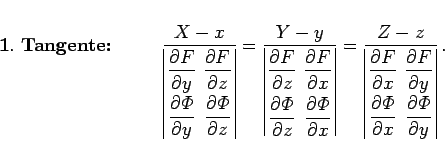 | (3.494) |
| 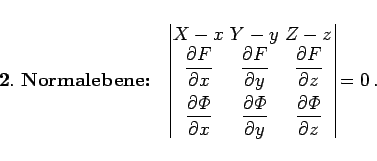 | (3.495) |
Dabei sind x,y,z die Koordinaten des Kurvenpunktes P und X,Y,Z die laufenden Koordinaten der Tangente bzw. der Normalebene. Die partiellen Ableitungen beziehen sich auf den Punkt P.
| Vektorgleichung | Koordinatengleichung |
| Tangente: | |
| 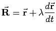 | 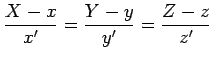 |
| Normalebene: | |
| 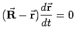 | x'(X-x)+y'(Y-y)+z'(Z-z)=0 |
| Schmiegungsebene: | |
| 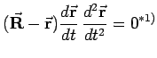 | 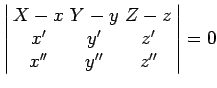 |
| Binormale: | |
| 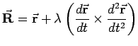 | 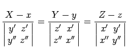 |
| rektifizierende Ebene: | |
| 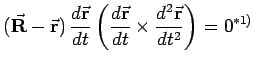 | 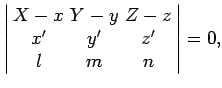 wo 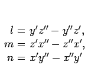 |
| Hauptnormale: | |
| 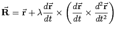 | 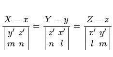 |
| *1) s. Spatprodukt dreier Vektoren. | |